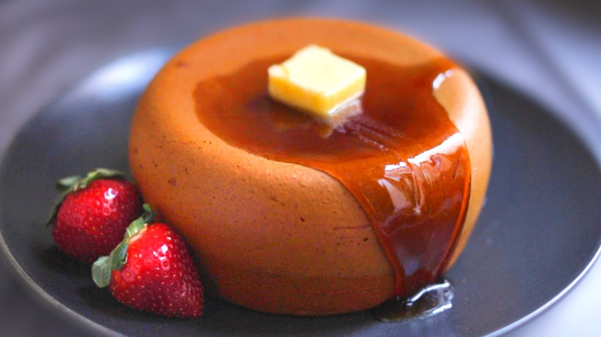

3 Ingredient Jiggly Pancake

I was looking at pictures of beautiful Japanese pancakes last night, when a fun idea came to me.
The ingredients you'll need are as follows:
- 2 cups pancake mix
- 1 pint of your favorite vanilla ice cream
- 1/3 cup of milk
Directions:
- Put your pint of ice in a shallow bowl mixing it with a stand mixer until it starts whipping up.
- Mix the milk and pancake mix in a seperate bowl until there are no clumps.
- Blend the pancake mix and ice cream batter together using a mixer.
- Pour the mixture into a tiny pot,putting a cover on top of it
- Put the pot into your oven with the cover @375F for 45 minutes.
- Taking it out of the oven flip the pot upside down using a plate, gently shake to release the Jiggly Pancake from the pot.
And thats all you need to make the 3 Ingredient Jiggly Pancakes, hope you enjoy!
Go back